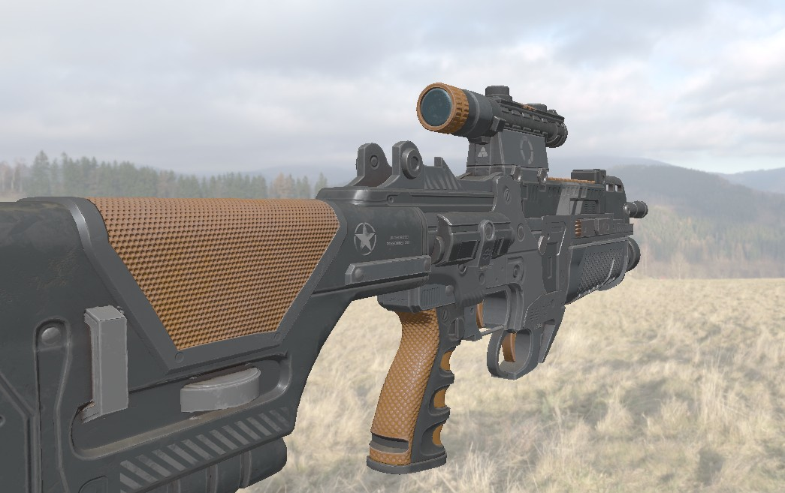
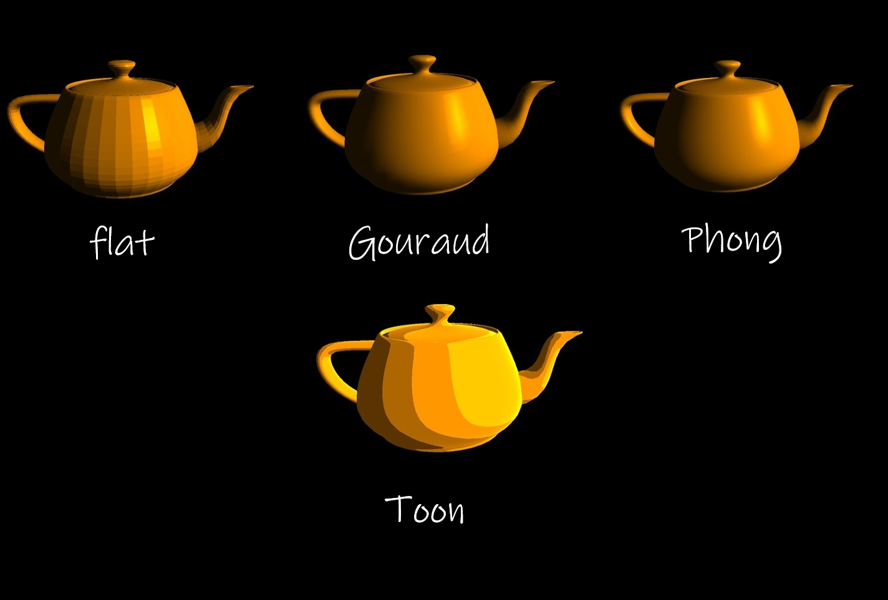
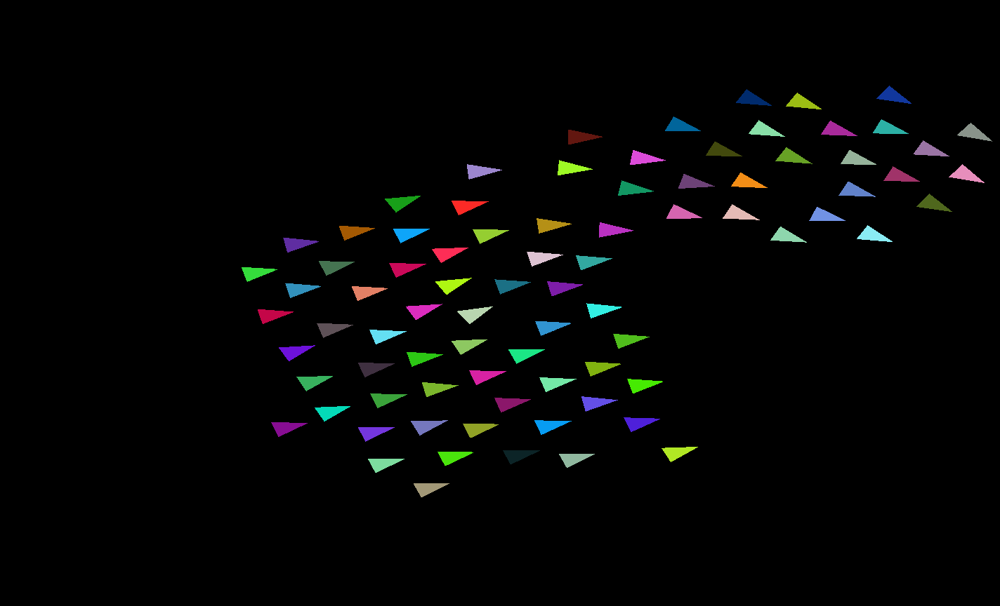
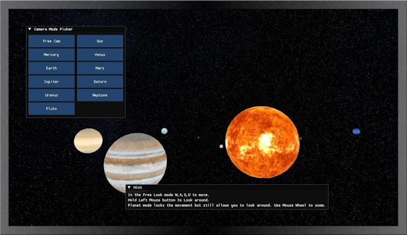
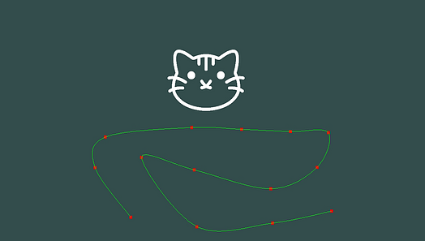
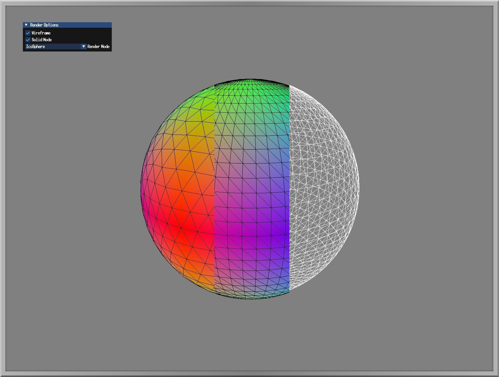

GRAPHICS PROJECTS
Tipu Framework
Lightweight rendering framework made for Vulkan.

Shader Toy
Real-time Vulkan shader playground.

Shading Examples
Graphics Programming Demos.

Boids
Created using C++ with OpenGL, GLFW, ImGUI.

Solar System
Solar System scene made from scratch using OpenGL.

Catmull-Rom Splines
Spline visualizer made in OpenGL.

Procedural Spheres
Procedural sphere generator.
